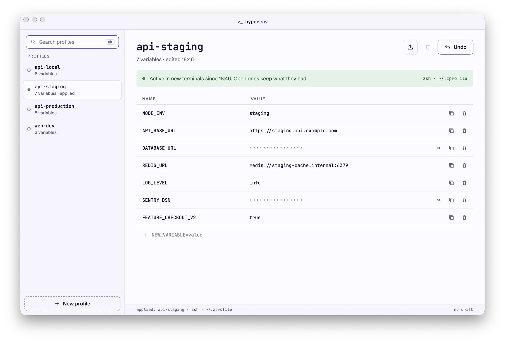
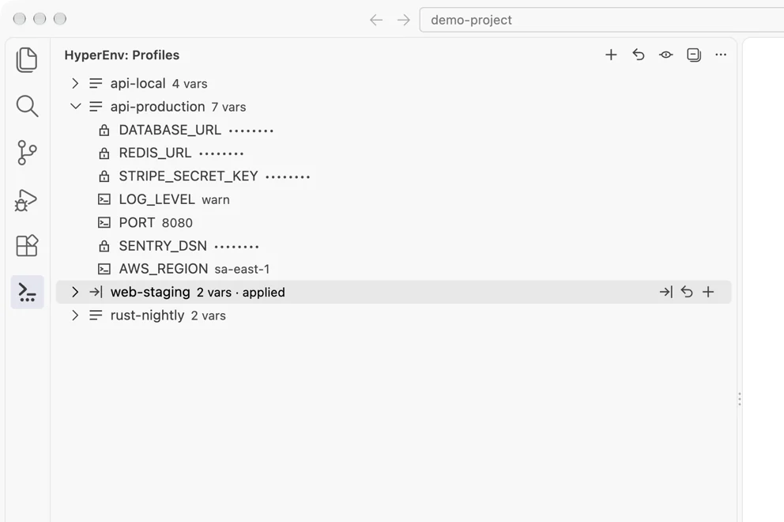
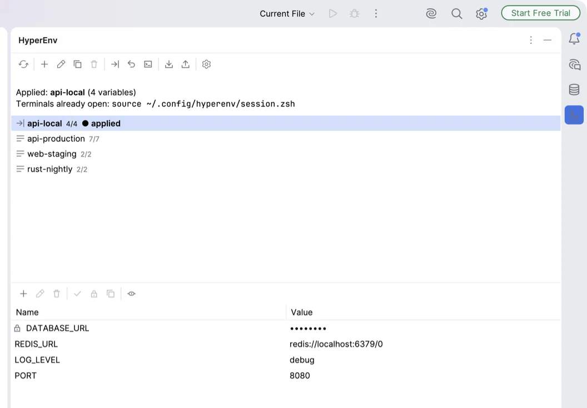

Pre-release · free and open source
One profile per environment.
Undo in one click.
Keep your variables in profiles like api-local and api-production. Apply one and every new terminal starts with it. Undo puts back the values you had before.
Downloads open with the first stable release. MIT license.

How it works
Three steps, and the last one is optional.
-
1
Keep profiles
A profile is a list of
KEY=valuepairs. Mark a value as secret and it stays masked until you ask to see it. Bring in an existing.envfile or start empty. -
2
Apply one
HyperEnv writes one generated file that your shell reads at login, so every terminal you open from then on has those variables. Terminals already open keep theirs; one
sourceline updates them. -
3
Undo
Every variable goes back to the value it had before, and the ones that did not exist are removed.
Command line
The same engine, from the terminal.
The hyperenv command ships inside the app and also runs on its own. Check what a profile would change before applying it, apply it, and take it back.
planshows the change without making itdriftchecks that a new terminal matches what is appliedexportwrites POSIX,.envor Docker format--jsonon every command, for scripts
$ hyperenv plan api-production
Applying "api-production" would export 7 variables.
+ API_BASE_URL
+ DATABASE_URL
+ STRIPE_SECRET_KEY
…
$ hyperenv apply api-production
"api-production" applied: 7 variables. Every new
terminal starts with them.
$ hyperenv unapply
"api-production" undone: 7 variables back to
what they were.Editors
Switch without leaving the editor.
The plugins call the same command, so the editor, the app and the terminal always agree on what is applied.


Details
What it does to your machine.
- No sudo
- Everything lives in your home folder. Your shell's startup file gets one small marked block, added once and removed on request.
- Your shell
- zsh, bash, fish and PowerShell.
- Secrets stay masked
- Shown as dots in the app, the plugins and the terminal, unless you ask to reveal them.
- Nothing leaves the computer
- No account, no sync, no telemetry. Profiles stay in a local file.
- Three platforms
- A native app on macOS. A desktop app for Windows and Linux. The command on all three.
- Open source
- MIT license. Read the code, file an issue or send a pull request on GitHub.
The first stable version is close.
Pre-release builds are being tested now. Follow the repository to hear when the first stable version is out, or write with questions.